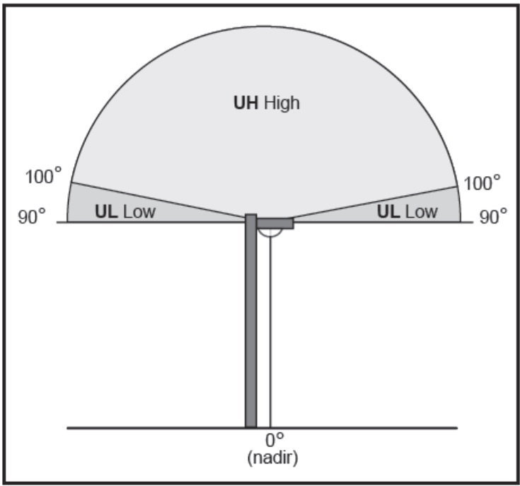

Figure 3: Campus lighting survey (Gary Hartwell, 2014)
Smith College is well known for its historic beautiful residential campus and natural New England setting. Redesigned by the firm founded by Frederick Law Olmsted, Sr. in 1893, the campus was planned so that students would follow curving, organic paths on their way to class and enjoy the natural and architectural beauty around them. When the campus was designed, the only artificial light at night was the occasional gas lamp. All campus residents knew the naturally dark night sky and the splendors of the Milky Way. Not until nearly fifty years later were outdoor electric lights installed around campus.
Now, outdoor lighting at Smith is an often overlooked but very important facet of the college. It is safe to assume that the college will have outdoor lighting for the foreseeable future. However, excessive or poorly designed outdoor lighting has negative effects on safety, human health, and the environment. Bright lights with high glare make it hard to see potential intruders or pedestrians crossing the street at night. Artificial light at night also has been correlated with higher risk for cancer, obesity, diabetes, and disruption of circadian rhythms, or sleep cycles. It disrupts many factors of the environment including both plants and animals. Finally, artificial skyglow created by this light obscures the starry night sky, impacting the ability to do meaningful research. It is these hazards that motivate the creation of this policy.
This policy is focused on establishing safe, energy-efficient and dark-sky-friendly lighting at Smith College. It applies to all new construction on campus as well as replacements for existing light fixtures.
Design of outdoor lighting at Smith should take the following principles into consideration:
Lighting and light pollution are an increasing problem worldwide. The new advent of cheap, efficient LED lighting especially has spawned a jump to a 6% increase (worsening) in light pollution per year. College and university campuses offer unique opportunities to combat light pollution: their institutional scale is often a manageable size for effecting change, they provide an opportunity to teach large numbers of students about these important issues, and many have active research in astronomy. Many of these campuses in the United States are currently grappling with this problem as well and starting to take steps to reduce their light pollution impact.
The following colleges and universities are some good examples of institutions that have carefully controlled outdoor campus lighting.
Outdoor lighting at Smith has evolved over the last century in an ad hoc and organic fashion. There is a very large range of style, brightness, protection against glare, color, and type of light sources. Outdoor light fixtures can be divided into two categories - free-standing and mounted on buildings. Mounted lights include wall packs, beacons, and entrance lights. Wall packs are lights that are attached to the sides of buildings that radiate light out in nearly every direction. An example is shown in Figure 1.
Beacons are the decorative light fixtures outside buildings like Neilson Library and Seelye Hall that are meant to serve as attractive signposts for the building. An example is shown in Figure 2.
There are other entrance lights on every building on campus that range widely in style and type.
A recent study conducted by Gary Hartwell of Facilities Management mapped and tabulated most free-standing outdoor lights on campus, which fell into roughly six categories (Figure 3).
The campus walkways are mostly illuminated by Sternberg inverted gooseneck lamps, such as the one shown in Figure 4.
Currently, when lightbulbs fail, there are a mix of different bulbs that are being used to replace them. In addition, new fixture styles are being used for each new project. There are semiannual lighting walks conducted by the Dean of Students to evaluate the condition of the lights and note where lights need to be replaced. The walks are attended by representatives of student government and of the houses, Public Safety, and Facilities Management.
Here we list several examples of well-designed and poorly designed outdoor lighting fixtures at Smith.
A good lighting fixture can be found on the back wall of Burton Hall - the light is directed only downwards, not out or up (Figure 5).
Another good fixture is found on the entrance to the Lyman Plant House. This light is fully shielded so that it is very efficiently lighting the ground but nowhere else (Figure 6).
There are many well-designed Sternberg gooseneck fixtures around campus, specifically those which are completely shielded and have no bulb emerging from the bottom (Figure 4).
One example of bad lighting fixtures at Smith is at the Mendenhall Performing Arts Center. These fixtures radiate light out in every direction, which is highly inefficient and visually uncomfortable, as shown in Figure 7.

Another example of poorly designed fixtures are the Bollard lights outside of the Campus Center, which are lights on low posts that also radiate in every direction (Figure 8).
On the back of Ziskind House there is a light that is well-shielded against light going directly up, but very poorly shielded against glare (Figure 9).
The Backlight Uplight Glare (BUG) light rating system was developed by the IES to quantify the amount and direction in which light is emitted by a given light fixture. Each element of the BUG rating is categorized from 0 to 5, with 0 being the least light emitted in a given direction and 5 being the most (Tables 1, 2, and 3). Figure 10 shows the angles of light that the BUG system regulates.

Another quantitative assessment of lighting fixtures is through the Correlated Color Temperature(CCT) of the bulb. This is a number assigned to the bulb based on the color of the light it emits. These colors correlate to the color of a metal that is heated to a specific temperature. Older light bulbs have metal filaments that actually reach this temperature, while more modern elements do not, but still retain the CCT as a way of describing the color.
The following policy is informed by best practices on outdoor lighting set forth by the Illumination Engineers Society (IES), lighting designers, and the International Dark-Sky Association (IDA). The following four rules are the proposed policies for Smith College Outdoor Lighting.
A replacement for a Bollard-style fixture is the Ashbery Path Light, produced by LandscapeForms (Figure 14). This shields the light against glare and has a color temperature of 3000K.
The Sternberg gooseneck fixtures around campus are another good example. For these, there is an incandescent model with a recessed bulb that can be replaced by a LED so there is a fully shielded bulb with a lower correlated color temperature and more efficiency.
One wall pack that is approved is the Voltaire Architectural Wall Pack produced by H.E. Williams, Inc. (Figure 15). This is fully shielded and has factory set automatic dimming controls.
A good retrofit is to put a can-like shield around an existing fixture. These shields also exist on new fixtures. One such fixture is the Skyline Light Wall Mount from Minka Group (Figure 16).
Adaptive Controls: Devices such as motion sensors, timers and dimmers used in concert with outdoor lighting equipment to vary the intensity or duration of operation of lighting.
Baffle: An opaque or translucent element to shield a light source from direct view.
Bulb or lamp: The source of electric light. To be distinguished from the whole assembly (see luminaire). Lamp often is used to denote the bulb and its housing.
BUG rating: Backlight, Uplight, and Glare ratings for amounts of lumens in each zone, determined by the IES.
Color rendering: Effect of a light source on the color appearance of objects in comparison with their color appearance under normal daylighting.
Correlated Color Temperature (CCT): A measure in degrees Kelvin (K) of a light’s warmness or coolness. Lamps with a CCT of less than 3,200 K are pinkish and considered warm. Lamps with a CCT greater than 4,000 K are bluish-white and considered cool.
Cut off angle, of a luminaire: The angle, measured up from the nadir (i.e. straight down), between the vertical axis and the first line of sight at which the bare source (the bulb or lamp) is not visible.
Dimmer: Dimmers can reduce the input power requirements and the rated lumen output levels of incandescent and fluorescent lights. Fluorescent lights need special dimming ballasts. Dimming incandescent lights reduces their efficiency.
Disability glare: Glare resulting in reduced visual performance and visibility. It is often accompanied by discomfort.
Discomfort glare: Glare that produces discomfort, but does not necessarily diminish visual performance.
Efficacy: The ratio of light output to its consumption of power, measured in lumens per watt (lm/W), or the ability of a lighting system to produce the desired result.
Efficiency: A measure of the effective or useful output of a system compared to the input of the system.
Electromagnetic (EM) spectrum: The distribution of energy emitted by a radiant source, arranged in order of wavelength or frequency. Includes gamma-ray, X-ray, ultraviolet, visual, infrared, and radio regions.
Fixture: The assembly that holds the lamp in a lighting system. It includes the elements designed to give light output control, such as a reflector (mirror) or refractor (lens), the ballast, housing, and the attachment parts.
Flux (radiant flux): Unit is erg/sec or watts.
Foot-candle: Illuminance produced on a surface one foot square from a uniform point source of one candela.
Full-cutoff fixture: An IES definition; “Zero intensity at or above horizontal (90∘above nadir) and limited to a value not exceeding 10% of lamp lumens at or above 80∘”.
Fully Shielded fixture: A fixture that allows no emission above a horizontal plane through the fixture.
Glare: Intense and blinding light that reduces visibility. A light within the field of vision that is brighter than the brightness to which the eyes are adapted.
High-Pressure Sodium (HPS) lamp: HID lamp where radiation is produced from sodium vapor at relatively high partial pressures (100 torr). HPS is essentially a “point source”.
Illuminance: Density of luminous flux incident on a surface. Unit is footcandle or lux.
Illuminating Engineering Society of North America (IES or IESNA): The professional society of lighting engineers, including those from manufacturing companies, and others professionally involved in lighting.
Incandescent lamp: Light is produced by a filament heated to a high temperature by electric current.
Intensity: The degree or amount of energy or light.
International Dark-Sky Association (IDA, Inc.): A non-profit organization whose goals are to build awareness of the value of dark skies, and of the need for quality outdoor lighting.
LED: Light emitting diode.
Light Pollution: Any adverse effect of artificial light.
Lumen: Unit of luminous flux; the flux emitted within a unit solid angle by a point source with a uniform luminous intensity of one candela.
Luminaire: A complete lighting unit that usually includes the fixture, ballasts, and lamps.
Lux: One lumen per square meter. Unit of illuminance.
Mounting height: The height of the fixture or lamp above the ground.
Photocell: An electronic device that changes the light output of a luminaire dynamically in response to the ambient light level around the luminaire.
Shielding: An opaque material that blocks the transmission of light.
Skyglow: Diffuse, scattered sky light attributable to scattered light from sources on the ground.
Uniformity ratio: Ratio of illumination levels between average and darkest areas on the ground due to lighting.